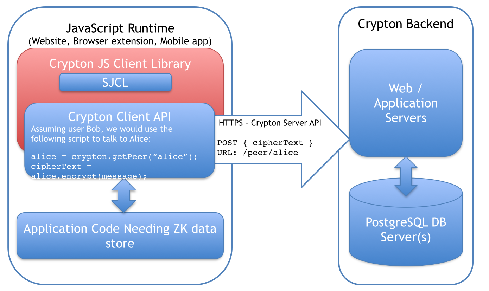

Crypton
Giving privacy to the internet
http://crypton.io
WHO AM I ?
Tommy-Carlos Williams
tommy@devgeeks.org
@theRealDevgeeks
http://blog.devgeeks.org
http://github.com/devgeeks
What is Crypton?
Zero-Knowledge framework for JavaScript
https://github.com/spideroak/crypton/
- Easily build cryptographically secure cloud applications
- Open Source (GPLv3, commercial licenses available)
“No Novel Cryptography”
Based on Stanford JavaScript Crypto Library
Already developed, strong cryptography put together by career cryptographers
Works with your favourite JS frameworks
Zero-Knowledge
Server is unaware of the contents it is storing
Done through the use of Cryptography
More users are becoming "privacy aware."
Terrabytes of data being transferred over the internet
- Credit card numbers, passwords, and other sensitive data
- All waiting to be intercepted, attacked or stolen
What can you store with Crypton?
Containers
JavaScript objects and primitives
Messages
Secure messaging
(Allows user account to request to add a message to the "inbox" of another user account)
Architecture
First, a caveat / warning
Crypton is a pre-release project at v0.0.1
It has not been through a first round of refactoring, general code cleanup, and security review
All of these things will change in the versions between v0.0.1 and v0.1.0, at which point we'll make a first stable release that we encourage for production and commercial uses
With that out of the way,
Let's code...
<script src="crypton.js"></script>
Accounts
Creating an account
crypton.generateAcount(username, passphrase, callback)
crypton.host = "localhost";
var myApp = {};
var username = 'testuser';
var passPhrase = 'pass1234';
crypton.generateAccount(username, passPhrase, function(err, account) {
if (err) {
// Inform the user, adjust application flow.
alert(err);
return;
}
// Do something with the returned account, if needed
myApp.account = account;
});
Authorisation
Authenticating with the server
Zero-knowledge proof
crypton.authorize(username, passphrase, callback)
crypton.authorize(username, passPhrase, function(err, session) {
if (err) {
alert(err);
return;
}
// Store the authenticated session somewhere
// necessary for requesting and receiving data
myApp.session = session;
});
Containers
Data in Crypton is treated as a traditional object database.
- Containers are append-only stores that are transparently encrypted / decrypted on the client side.
- Identified by keys such as "diary"
- From the server's perspective, container names
(and of course their contents)
are unreadable
Creating a container
session.create(containerName, callback)
myApp.session.create("diary", function(err, container) {
if (err) {
alert(err);
return;
}
// `container` is the new container ready to use
myApp.diary = container;
// Do something with the container
});
Loading a container
session.load(containerName, callback)
// Existing container, not yet loaded
myApp.session.load("diary", function(err, container) {
if (err) {
alert(err);
return;
}
// Do something with the container
myApp.diary = container;
});
session.load
Will callback with an error if the given containerName does not exist.
session.create
Will create a blank container and save its initial state to the server.
Adding to a container
container.add(key, callback)
myApp.diary.add('entries', function (err) {
if (err) {
alert(err);
return;
}
// diary now has an entries object
});
Will callback with an error if "entries" already exists.
Accessing container objects
container.get(key, callback)
// Wrapping in an `add` saves an error check below
myApp.diary.add('entries', function () {
// worst case scenario: key already exists
// and will not be overwritten
myApp.diary.get('entries', function (err, entries) {
if (err) {
alert(err);
return;
}
myApp.entries = entries;
});
});
Adding data and saving it
container.save(callback)
var id = "entry-"+Date.now();
var newEntry = {
id: id,
title: 'Tonight I used crypto, and I LIKED IT!'
};
myApp.entries[id] = newEntry;
myApp.diary.save(function (err) {
if (err) {
// alert the user
return;
}
// update UI, etc
});
Getting it back
container.get(key, callback)
...more of the same
myApp.diary.get('entries', function(err, entries) {
if (err) {
alert(err);
return;
}
myApp.entries = entries;
myApp.allEntries =
_.map(myApp.entries, function(entry, key){ return entry; });
console.log(myApp.allEntries);
});
Bonus points
For extra credit integrate with your favourite MVC framework
In my case, Backbone.js
- Override
Backbone.sync()
andBackbone.Collections.fetch()
Thanks!
Feel free to ask me any SpiderOak / Crypton questions you may have as long as they have nothing to do with the actual Cryptography.
Just kidding. *
* I'm totally not kidding...